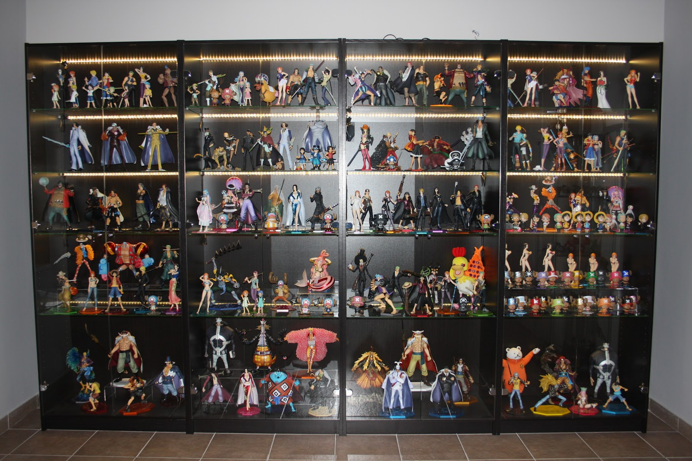
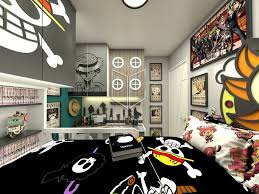
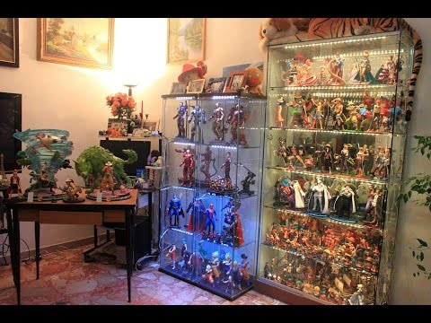
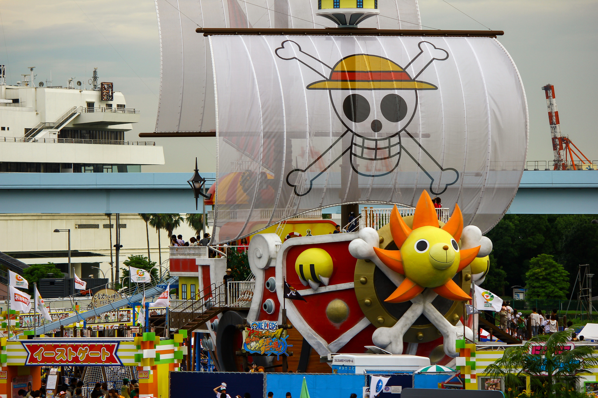
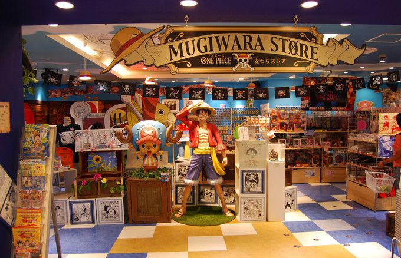
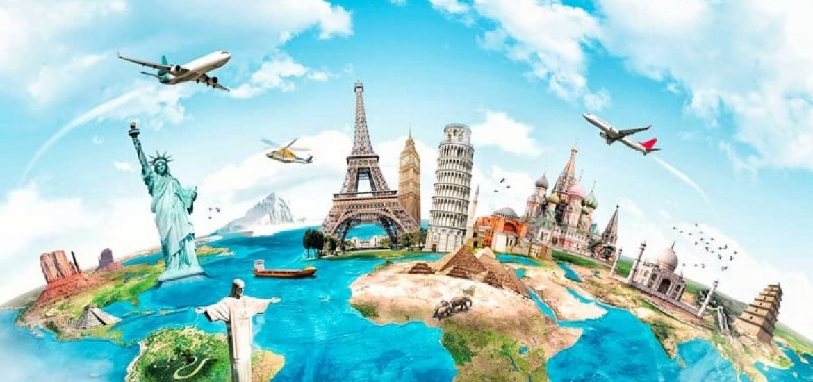
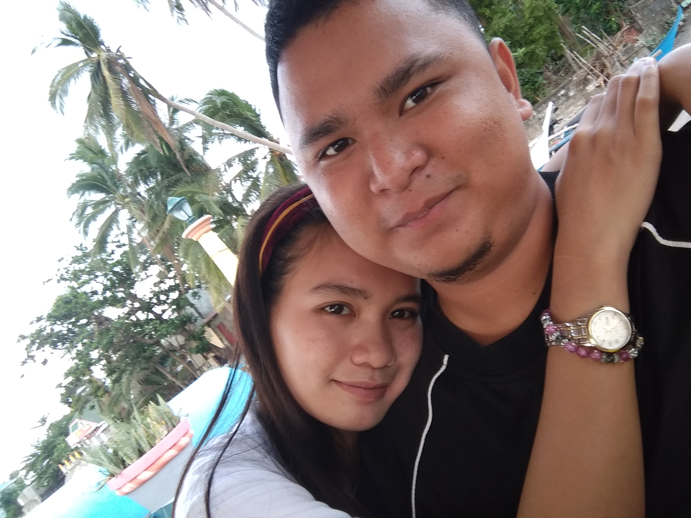

OUR DREAMS






Our dreams was set by the two of us that's why only the two of us can achieve it. baby napakasaya ko kasi dumating ka sa buhay ko. ikaw yung nagbigay ng liwanag sa akin. kakaibang liwanag to the point na binago ko kong ano ako dati
ikaw yung nagbigay sa akin ng kasiyahan at ikaw pa din yung gusto kong magbigay sa akin ng kasiyahan, palagi o minsan man tayong magaway o di pagkakaintindihan. wala na akong ibang gustong magcomfort, yumakap at mag alaga sa akin.
ikaw lang wala ng iba .madami tayong pangarap sa buhay madami tayong gustong gawin ng magkasama. madami na tayong nabuong memories at mas madami pa tayong mabubuo ng magkasama. naalala ko pa nong bago pa lang tayo madami na agad tayong gustong gawin
madami na tayong pangarap na gustong matupad. years comes by madami na tayong problema at pagsubok na nalampasan. alam kong dumadating sa time na napapagod tayo. kong dumating man yun magpahinga ka. pero wag kang susuko just think
of all the good memories our dreams and our long time relationship. dadaan tayo sa mga problema pero di tayo magpapatalo. samahan mo akong harapin ito hawakan mo yung kamay ko at samahang lampasan lahat. i'm so damn inlove with you na lahat gagawin ko
may mga pagkukulang man, may mga pagkakataon man na nawawalan ako ng time pero lagi mo sanang isipin na ikaw pa din ang nasa puso at isip ko. paulit ulit kitang pipiliin. dumating man yung time na puro problema na. tandaan mo na kakapit at patuloy akong lalaban
para sa pangarap natin para sa mga plano natin at higit sa lahat para sa ating dalawa. ill do my best to be worth of your trust. gagawin ko lahat para maiparamdam sa iyo lahat. na mahalaga ka na importante ka at higit sa lahat worth it lahat basta para sayo.
a second chance may be to much to ask but i swear from now on ill love you much better. ill hold you forever and never let go. i might not be the perfect boyfriend for you but ill be the one that stay with you through ups and down. the key to succeeding in a
relationship is not finding the right person, it's learning to love the person you found. i hope you can forgive me and give me second chance to prove you everthing that i realized. i hope you forgive me and let me show you how much ILOVEYOU. <3 <3 <3
more unforgettable memories to come more dreams to acheive with you. sana bigyan mo ako ng pagkakataon na maipakita sayo lahat. because i realize that no matter where you are or what you're dong, or who you're with, it doesn't matter, it doesn't change it, i will always have and i always will, honestly, truly,completely loveyou. alam kong nasa movie ito pero gantong ganto yung gusto kong sabihin sayo. i want to expend all with the love of my life with my dream girl and most of all the most beautiful and loving girl sa buhay ko.
ILOVEYOU SO MUCH BABY, AND I MISS YOU SO MUCH. <3 <3 <3

If you dont take RISK, you can't create FUTURE
- Monkey D Luffy